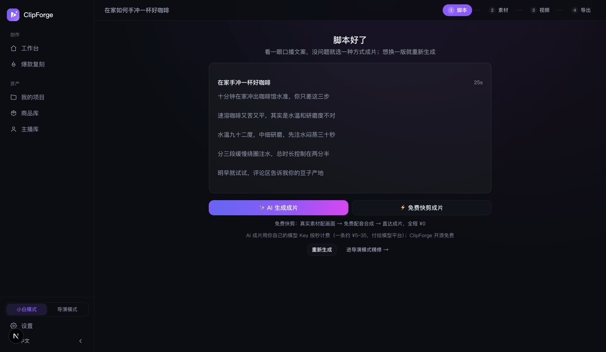

Video bán hàng AI UGC: người thật nói mà không cần lên hình, làm sao đạt «99% không nhận ra là AI»
Nói ngắn gọn: không cần quay người thật, không cần thuê KOL, AI tạo người thường nói trước ống kính, lời thoại do giọng gốc nhân vật nói đúng từng chữ, khớp khẩu hình — đó chính là video bán hàng AI UGC. Năm 2026 nó thật sự khả thi chỉ vì một lý do: thế hệ mô hình video mới đã vượt «cửa ải làn da», yếu tố quyết định chuyển từ hình ảnh sang lời thoại. Công cụ mã nguồn mở UGCBatch Studio (AGPL-3.0, miễn phí không watermark) tách mục tiêu «99% không nhận ra là AI» đến từ phương pháp luận công khai thành bốn lớp cơ chế làm được: lời thoại, persona, nhất quán hình ảnh, khẩu hình — bài này giải thích từng lớp nó làm thế nào, một video tốn bao nhiêu.
1. Vì sao năm 2026 AI UGC khả thi: «cửa ải làn da» đã qua, yếu tố quyết định là lời thoại
Vài năm trước, người ảo bán hàng nhìn là biết giả: da như phủ sáp, số ngón tay sai, ánh sáng không ăn vào mặt. Từ thế hệ mô hình video Seedance 2.5, những sơ hở về hình ảnh này về cơ bản đã qua — chất da, vi biểu cảm, ánh sáng môi trường đều đứng vững, lần đầu tiên video AI người nói không còn chịu thiệt ở chuyện «có giống người không».
Thế là chỗ lộ đã đổi: lời thoại. Người xem ba giây là nhận ra giọng quảng cáo — kiểu mở đầu «Xin chào mọi người, hôm nay mình giới thiệu cho mọi người một món...», hình có thật đến đâu cũng vô ích. Phương pháp luận «99% không nhận ra là AI» lan truyền trong giới sáng tạo AI UGC nước ngoài cũng có kết luận cốt lõi là một câu: qua cửa ải làn da rồi, yếu tố quyết định là lời thoại có giống người nói thật không.
Nói rõ giới hạn trước: «99% không nhận ra» trong bài này luôn là mục tiêu phương pháp luận, không phải kết quả mà công cụ nào có thể cam kết; và «không nhận ra» nghĩa là cảm giác xem tự nhiên, không làm người xem bỏ đi, không phải che giấu danh tính AIGC — nhãn AI cần gắn theo quy định nền tảng, UGCBatch Studio mặc định gắn sẵn (chi tiết xem Hướng dẫn sử dụng chương tuân thủ).
2. Cơ chế chân thực bốn lớp của UGCBatch Studio
Tách «giống người thật đăng» thành bốn bài toán kỹ thuật được: lời thoại có giống người nói không, người có giống người thường thật không, các cảnh có cùng một thế giới không, miệng và giọng có khớp không. Mỗi lớp một cơ chế:
Lớp ①: Luật văn nói cho lời thoại + hội đồng giám khảo mổ xẻ kịch bản
Khi viết kịch bản bắt buộc áp dụng một bộ luật văn nói: câu mở đầu bắt đầu từ giữa cuộc trò chuyện (như lướt trúng người khác đang nói chuyện, chứ không phải nghe lời mở màn), giữ các câu cửa miệng kiểu «nói thẳng ra là», «chính cái món này», cấm câu khẩu hiệu giọng quảng cáo. Câu mở đầu của video thật trên trang chủ, bản nháp đầu là «Xin chào mọi người, hôm nay mình giới thiệu cho mọi người...», sửa xong thành «Chính cái món này đã cứu ví tiền Starbucks của tôi» — khác biệt nằm ở lớp này.
Trên nền luật đó còn qua thêm một cửa hội đồng giám khảo: trong một lần gọi LLM có bốn giám khảo — nhịp, văn nói, sáng tạo, cấu trúc — mổ xẻ lời thoại từng cảnh một lượt, đưa ra bản viết lại giữ nguyên độ dài (không đổi cấu trúc thời lượng, chỉ thay phần thịt), bạn xem bản đối chiếu và quyết định dùng bản nào.

Lớp ②: Ràng buộc chân thực cho người thường, không ra khuôn mặt hot girl «nhìn là biết giả»
AI mặc định thích tạo khuôn mặt hot girl chỉnh sửa kỹ, trong khi độ tin cậy của UGC lại đến từ «người bình thường như bạn và tôi». UGCBatch Studio gắn một bộ ràng buộc khi tạo nhân vật: người bình thường gọn gàng dễ nhìn — cấm mặt hot girl chỉnh sửa, cũng cấm cố tình làm xấu; dùng nền có dấu vết sinh hoạt, chứ không phải studio vô trùng. Niềm tin của người xem vào người thường là nền móng chuyển đổi của bán hàng bằng người ảo.
Lớp ③: Lưới 9 khung phân cảnh, tạo ảnh một lần khóa cứng sự nhất quán
Video nhiều cảnh dễ lộ nhất là «đổi cảnh là đổi người». Cách giải của UGCBatch Studio là lưới 9 khung phân cảnh: tạo ảnh một lần vẽ chín phân cảnh trên cùng một ảnh, ngoại hình nhân vật, căn phòng, ánh sáng cả chín ô đều khóa cứng — vì vốn là cùng một lần tạo, không có chuyện «ảnh thứ hai vẽ lệch». Một lưới 9 khung khoảng $0.18 ≈ ¥1.3.
Lớp ④: Tạo cả video một chạm, lời thoại giọng gốc khớp khẩu hình
Lưới 9 khung đưa thẳng vào reference-to-video của Seedance 2.5: nhiều cảnh tạo một lần, tự chuyển cảnh (chuyển cảnh diễn ra bên trong mô hình, không phải ghép cứng ở hậu kỳ), lời thoại do giọng gốc nhân vật nói đúng từng chữ, khớp khẩu hình — không phải hai lớp «hình + lồng tiếng dán lên». Cả video 12 giây đo thực tế $3.6 ≈ ¥26; ngân sách eo hẹp có thể đổi gói Mini, khoảng $0.04/giây.
3. Kho người dẫn: ảnh định trang bốn góc, không đổi mặt qua các video
Làm tài khoản không chỉ cần «trong một video không đổi mặt», mà là người theo dõi ngày nào cũng gặp cùng một người. Kho người dẫn của UGCBatch Studio hỗ trợ tự tạo người dẫn bán hàng: tạo một lần ảnh định trang bốn góc chính diện / nghiêng / sau lưng / cận cảnh (một lần tạo đảm bảo bốn ảnh là cùng một người), sau đó lưới 9 khung và tạo cả video một chạm đều lấy ảnh định trang làm mốc nhận dạng — khóa khuôn mặt qua các cảnh, các video, video hôm nay và video tuần trước là cùng một khuôn mặt. Đây là bước then chốt để bán hàng bằng người ảo đi từ «từng video» đến «tài khoản có persona».
4. Bốn hình thức bán hàng: người nói chỉ là một trong số đó
Khi tạo video có bốn hình thức bán hàng để chọn, người thật nói không cần lên hình chỉ là thế mạnh mặc định:
- Gợi ý thông minh: AI chọn hình thức theo sản phẩm, chủ yếu trình diễn sản phẩm thật;
- Người thật nói: nhân vật chính của bài này — người thường AI nói trước ống kính để review;
- Tiểu phẩm tình huống: tiểu phẩm review có nhân vật có cốt truyện, nhiều vai mỗi vai một giọng riêng;
- Ghép ảnh chữ: dựng nhanh ảnh và chữ khớp nhịp, luồng miễn phí cũng chạy được.

Dưới hình thức còn có 391 mẫu video tự gợi ý theo sản phẩm — mẫu đóng gói trọn bộ phong cách kịch bản, chuyển động máy, Look hình ảnh, cấu hình dựng, những cách chơi UGC kinh điển như trước và sau trang điểm, nhật ký dùng hết, danh sách khuyên đừng mua đều có trong đó.
5. Làm hàng loạt không trùng lặp: luân phiên nhịp hành vi
Điều thứ hai AI UGC sợ nhất là «cảm giác hàng loạt»: cùng một bộ động tác, cùng một tư thế ngồi, cùng kiểu cầm lên - khoe - đặt xuống, đăng mười video là người xem chán. UGCBatch Studio tích hợp luân phiên nhịp hành vi: nhịp hành vi nhân vật của mỗi video (vừa nói vừa dùng, dùng trước nói sau, than thở trước ống kính...) tự luân phiên, cùng một sản phẩm ra nhiều video, video nào cũng có đường đi động tác khác nhau — chính là để chống cảm giác lặp lại khi làm hàng loạt. Ở chế độ đạo diễn còn chỉnh tay được từng cảnh: 18 preset chuyển động máy + chồng Mix, 8 Look hình ảnh, chi tiết đến từng cảnh.
6. Một video rốt cuộc tốn bao nhiêu
UGCBatch Studio là công cụ mã nguồn mở BYOK: phần mềm miễn phí (AGPL-3.0), không watermark, mức dùng AI trả theo lượng cho nền tảng mô hình bạn tự chọn (một giao diện gom 7 nền tảng lớn, hơn 30 mô hình), không cộng thêm, không ăn chia:
| Khâu | Chi phí đo thực tế |
|---|---|
| Tạo lời thoại + hội đồng giám khảo mổ xẻ (một lần gọi LLM) | LLM tính theo token, khoảng vài phần nghìn đến vài phần trăm tệ |
| Lưới 9 khung phân cảnh (tạo ảnh một lần khóa chín ô) | Khoảng $0.18 ≈ ¥1.3 |
| Seedance 2.5 tạo cả video một chạm (12 giây, người nói giọng gốc) | Đo thực tế $3.6 ≈ ¥26 |
| Gói Seedance Mini (phương án tiết kiệm) | Khoảng $0.04/giây |
Chi phí ghi ngay trên lựa chọn, kịch bản tạo miễn phí, đọc xong lời thoại bấm một lần mới tính phí — không bị tiêu tiền mơ hồ. Bản thân dự án có 1184 unit test bảo đảm, mã nguồn công khai toàn bộ trên GitHub.
7. Câu hỏi thường gặp
Video AI người nói có nhìn ra là AI không?
Về hình ảnh, thế hệ mô hình video mới đã vượt «cửa ải làn da»; giờ chỗ dễ lộ nhất là giọng quảng cáo trong lời thoại. «99% không nhận ra» là mục tiêu do phương pháp luận công khai đề ra, không phải cam kết — UGCBatch Studio dùng bốn lớp cơ chế (luật văn nói, mổ xẻ kịch bản / ràng buộc người thường / lưới 9 khung khóa nhất quán / giọng gốc khớp khẩu hình) để tiến gần. Đồng thời «không nhận ra» ≠ che giấu danh tính: nhãn AIGC cần gắn được mặc định gắn sẵn, đăng tuân thủ.
Có cần quay người thật không?
Không cần. AI tạo người thường nói trước ống kính, lời thoại do giọng gốc nhân vật nói đúng từng chữ, khớp khẩu hình; muốn cố định hình tượng lâu dài, dùng ảnh định trang bốn góc trong kho người dẫn để khóa khuôn mặt qua các video, không cần người thật lên hình hay thu âm.
Một video tốn bao nhiêu?
Phần mềm miễn phí; khâu AI trả theo lượng cho nền tảng mô hình: lưới 9 khung khoảng ¥1.3, Seedance 2.5 cả video 12 giây đo thực tế khoảng ¥26, gói Mini khoảng $0.04/giây. Chỉ phát sinh chi phí khi bấm một lần sau khi xác nhận kịch bản.
Bắt đầu với Video bán hàng AI UGC
Miễn phí · mã nguồn mở · không watermark, đọc xong kịch bản rồi mới quyết định có tiêu tiền hay không.